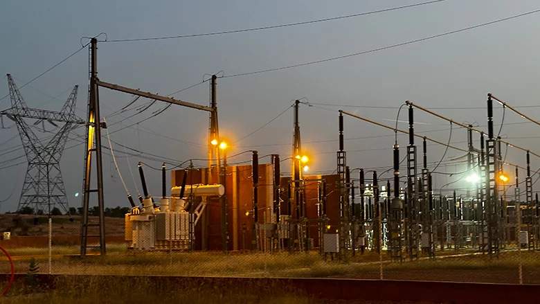

Electricity Supply In Africa
This project explores Electricity Consumption in Africa

Fig. 1: A GRIDCo plant station In AccraOn a humid December evening in Accra, long after dusk had settled, the city suddenly exhaled. Street vendors cheered as bulbs flickered back to life, and shopkeepers clapped their hands in relief. Another round of “dumsor”1 had ended, at least for the moment. The announcement that load shedding was “officially over” rippled through the capital with the same mixture of hope and skepticism that has accompanied every promise to tame Ghana’s electricity shortages.2
The condition of power blackout is a common phenomenon across Africa and familiar to modern residents in Ghana for more than centuries. Although the electricity supply is widely considered an emblem of modernity in most places, African residents were reminded that electricity was a privilege, not a right. A difficult challenge that individuals and businesses had to endure. However, it is crucial to emphasize that this condition has existed in Ghana’s history. Between the 1900s and 1940s, residents in Accra complained that the new municipal plant could barely keep their warehouses lit through the night.3 Power cuts were not called “dumsor” then, but the experience was strikingly similar: sudden darkness, interrupted routines, and the uneasy realization that the promise of electrification exceeded the infrastructure built to deliver it.
This project will place the colonial electricity supply within the wider history of technology, colonial infrastructure, and urbanism in the Gold Coast. The objective of this project is to compare four electricity projects, particularly in Accra, Cape Coast, Takoradi, and Kumasi, to help understand why the colonial state prioritized infrastructure development in particular places than the other to gain a deeper understanding of colonial infrastructural development and the sense of belongingness in colonial cities.
How and why is infrastructural development being prioritized in certain cities of the colony over others?
Electricity is one of the major phenomena that has revolutionized human existence, both in the economic and social sense. It plays a major role in our daily activities, from cooking, lighting, heating, and powering machines and electrical appliances. Its essentiality can be seen in various sectors like healthcare, transport, communication, and businesses. Reliable access to electricity is one of the most important, if not the most important, tipping points for economic development in Africa. However, many countries in Sub-Saharan Africa still struggle to access electricity, relying on diesel generators, kerosene lamps, candles, and firewood for lighting. Although electricity has become an integral part of every economy, African investment in this sector has been unevenly distributed.
Although electricity supply was a crucial infrastructure, its introduction into colonial West Africa took a greater amount of time. The practical possibility of electricity supply in the British colonies in West Africa was around the late 19th century into the early 20th century. From the beginning, colonial electrification was conceived not as a public service but as an instrument of economic extraction. Colonial electricity supply was not intended for public use but was primarily focused on mining areas, harbors, and railway lines, a pattern that has continued to the present day. Mining and industry receive much of the power, whilst many people are off the power grid.4
African residential areas, communities, and indigenous economic activities received little attention. They depended on firewood, kerosene lamps, and lanterns to illuminate their homes, streets, and communities. With some educated elites knowing the importance of having this infrastructure in the Gold Coast, they started petitioning the colonial administration for such provisions. Proposals to illuminate the towns were considered by the administration. However, the colonial government’s decision was to extend the project to a few strategic areas in the colony.5 Then, it focused again on government buildings, hospitals, and areas with expatriates. Understanding this history is crucial because many of the disparities established during the colonial era persist today.
Footnotes
Dumsor is an Akan word that denote sudden and consistent power blackout. This word gain popularity in 2012 when the Electricity Company of Ghana had to bring a schedule for people to know exactly when their lights are going to go off within the week to enable them to prepare. This condition became a political tool for party politics against the then sitting government which led to the part being thrown out of power.↩︎
Matthew, Bigg Mpoke “Ghana Says it has Fixed Power Deficit that Caused Years of Blackout” Reuters, December 30, 2015. https://www.reuters.com/article/markets/ghana-says-it-has-fixed-power-deficit-that-caused-years-of-blackouts-idUSL8N14J1GQ/↩︎
The Gold Coast Leaders, April 23, 1927.↩︎
David Hart. The Volta River Project: A Case Study of Politics and Technology (Edinburgh University Press, 1980), 10-13.↩︎
Ayodeyi, Olukuju. Infrastructure Development and Urban Facilities in Lagos, 1861-2000 (Institut français de recherche en Afrique, Institut français de recherche en Afrique, 2013), 36-38.↩︎